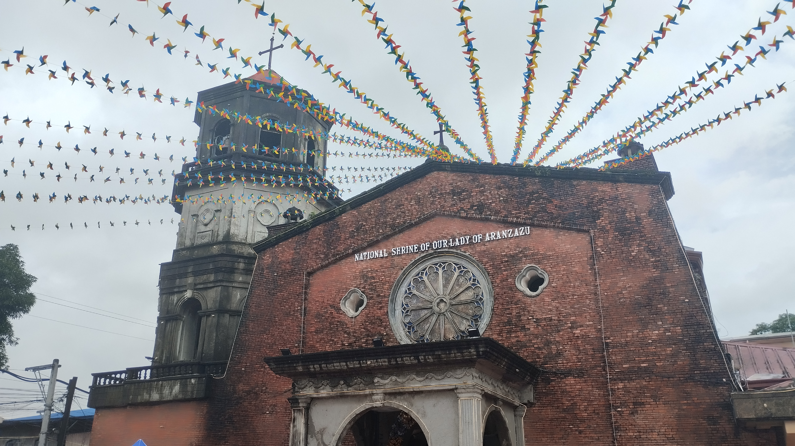

SEPTEMFEST OF SAN MATEO
SEPTEMFEST OF SAN MATEO
Getting the festival ready
A LITTLE ADVENTURE AROUND TOWN
Explore San Mateo.
Choose a stop on the festival trail. Your little guide will walk there while you discover the places behind the celebration.
YOUR SEPTEMFEST ADVENTURE
Pick a place to visit
✦ 4 STOPS TO EXPLORE
Tap a pin or a stop below to walk there
Illustrated map · not to scale

STOP 01 · TOWN LANDMARK
Our Lady of Aranzazu Church
A much-loved historic church and the heart of San Mateo's September celebrations.
National Shrine of Our Lady of Aranzazu, San Mateo, Rizal
Find directions ↗
MADE WITH COMMUNITY SPIRIT
Image credits
Festival photos are local project assets. Photographer and original publication details were not included with the image files.
- Churchimages/Landmark.jpg
- BidaBike Festimages/Second.JPG
- Street paradeimages/First.jpg
- Mr. & Ms. San Mateoimages/Third.JPG
- Pet Festivalimages/Fifth.JPG
Product images
- Putoimages/Puto.png
- Kutsintaimages/Kutsinta.png
- Sapin-sapinimages/Sapin.png
- Sumanimages/Suman.png
- Bibingkaimages/Bibingka.png
- Palitawimages/Palitaw.png
- Bikoimages/Biko.png
- Puto bumbongimages/Bumbong.png
Product image creator, publication, and license details were not included with the project assets. Add the original attribution details before publishing.
The illustrated trail map is custom artwork and is not a geographic survey or navigation map.